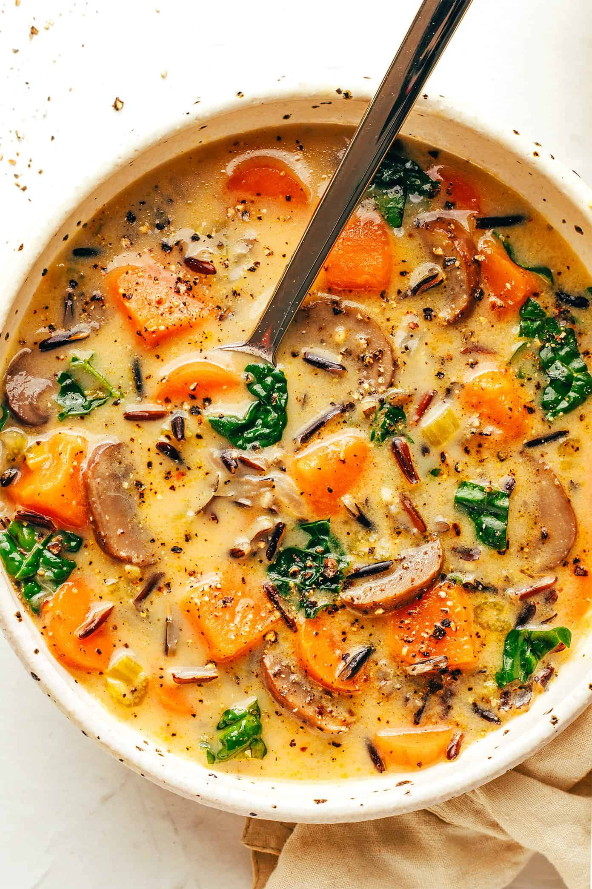

приготовление:
-
Нагрейте 1 ст.л. сливочного и оливкового масла в большой кастрюле на средне-сильном огне. Порежьте и добавьте 1 луковицу, обжаривайте 5 минут, периодически помешивая, пока он не станет мягким и прозрачным. Добавьте 4 зубчика чеснока и готовьте еще 1–2 минуты, периодически помешивая, до появления аромата..
-
Добавьте 1,5-2 л. овощного бульона, 2 порции дикиого риса, 250гр. грибов, 2 морковки, 2 палочки сельдерея, 1-2 батата и 1,5 ст.л. приправы «Олд Бэй». Перемешайте. Продолжайте варить, пока суп не закипит. Затем уменьшите огонь до средне-слабого, накройте крышкой и варите 30–40 минут, пока рис не станет мягким, время от времени помешивая.
-
Добавьте в суп 1 банка кокосового молока и 2 больших горсти кейла и осторожно перемешайте до однородной массы. По мере необходимости попробуйте и приправьте солью и перцем (плюс любой дополнительной приправой Old Bay, если хотите).